项目列表
/projects/
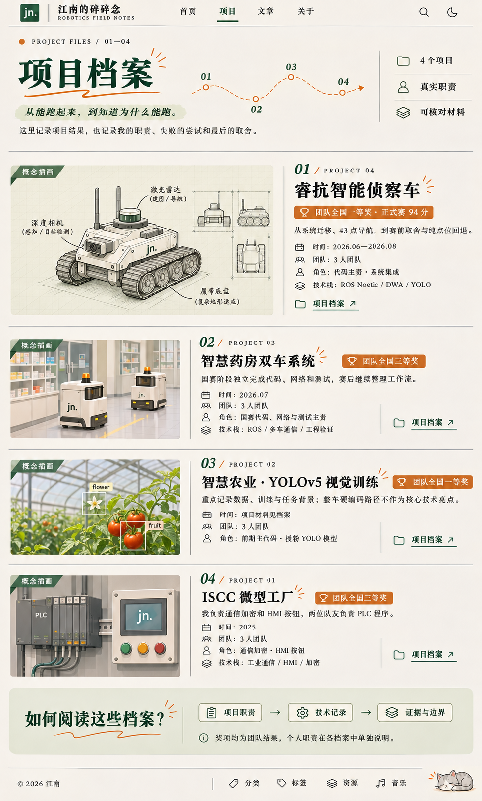
只展示现有四个项目；日期、职责、技术栈与结果读取 projects.yml。
第一版的纸色排版与微缩试验场，配一个局部的「小胖子调车」视频位。以下全是静态设计稿，不是运行中的新版博客；视频尚未制作。
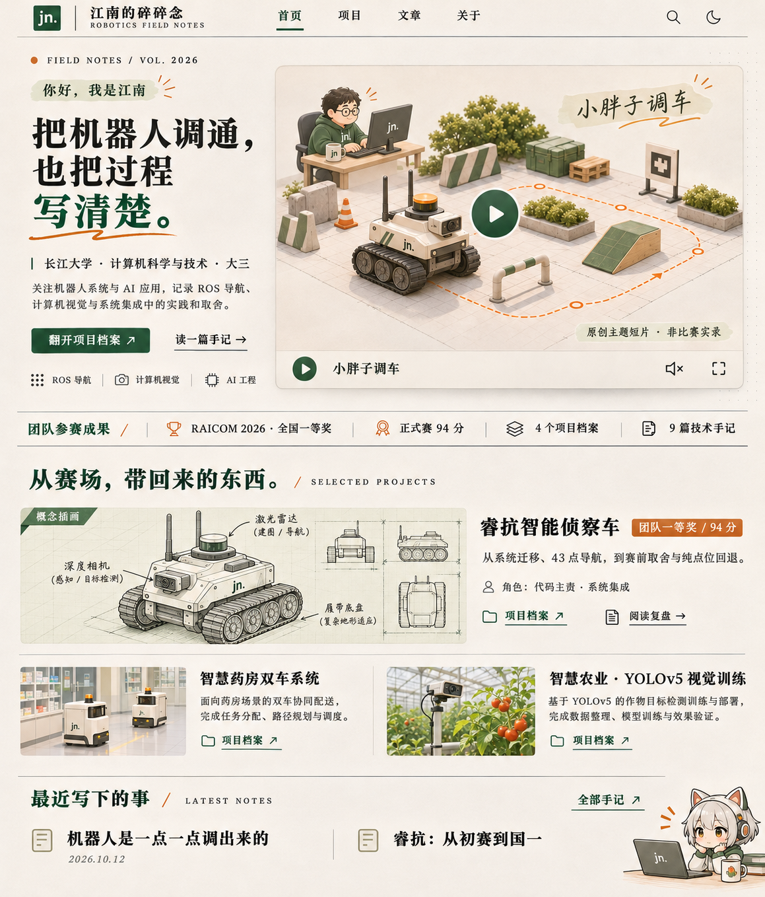
保留你选中的第一版。右侧独立媒体位，其他地方仍是清楚的个人介绍、项目档案与技术手记。
/projects/

只展示现有四个项目；日期、职责、技术栈与结果读取 projects.yml。
/projects/:id/
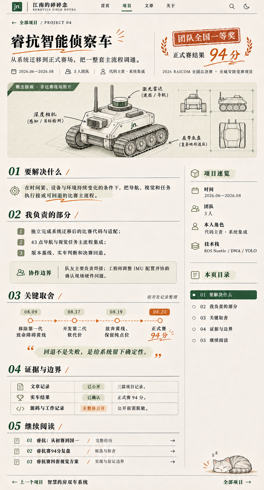
以睿抗为排版样例，不能把睿抗的内容与时间线套到其他项目。
/archives/
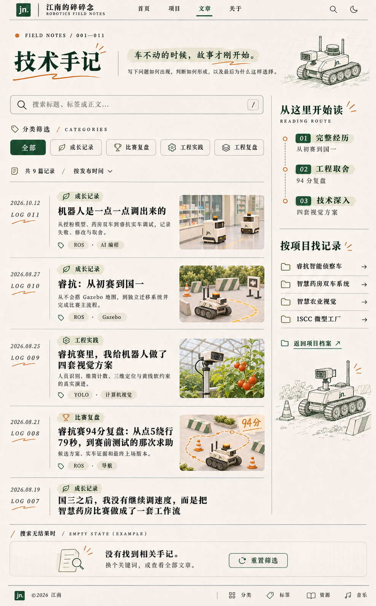
封面、日期、分类以文章源文件为准；图底空态是状态样例，不与正常列表同时显示。
post
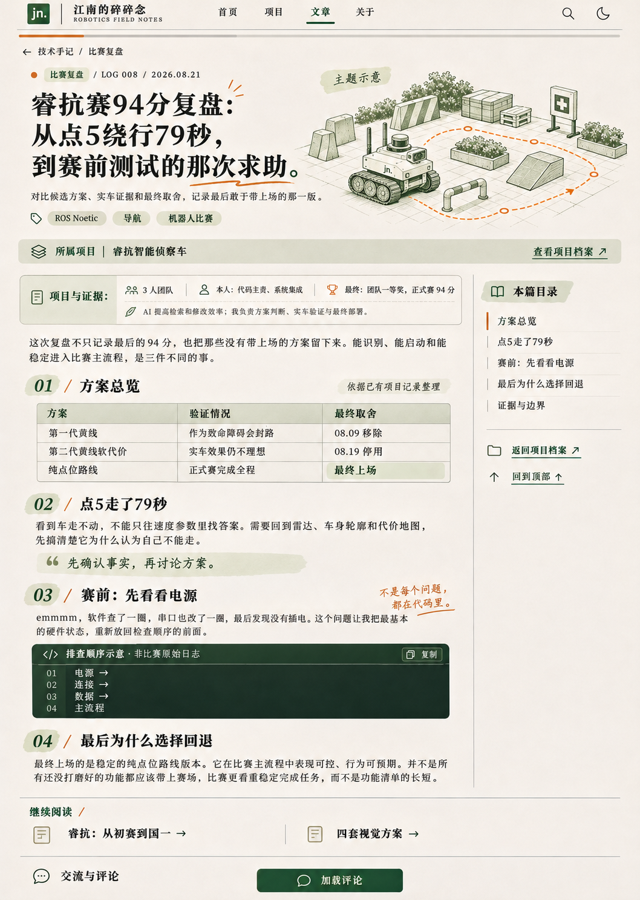
图中正文是排版示例，不是用户文章的替换稿；保留现有全文和目录。
/about/
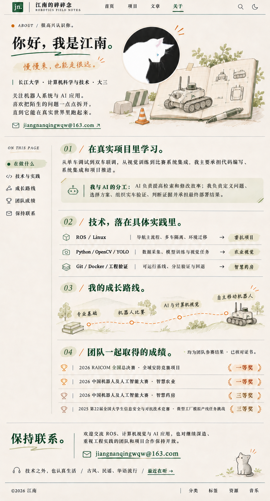
保留既有猫头像与正式邮箱；智慧药房为团队三等奖。
/downloads/
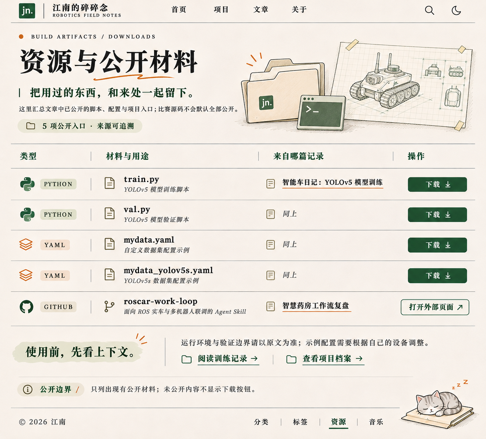
四个本地文件加一个外链；列表由文章 repro.artifacts 生成。
/categories/ + /tags/
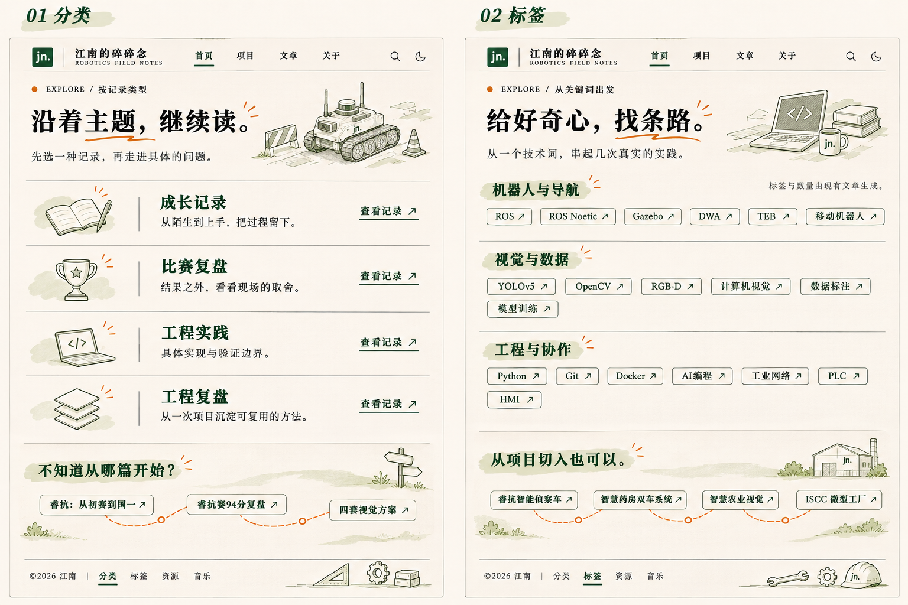
并排两个页面；标签与数量只能来自现有文章，不能按图虚构。
/music/ + /404.html
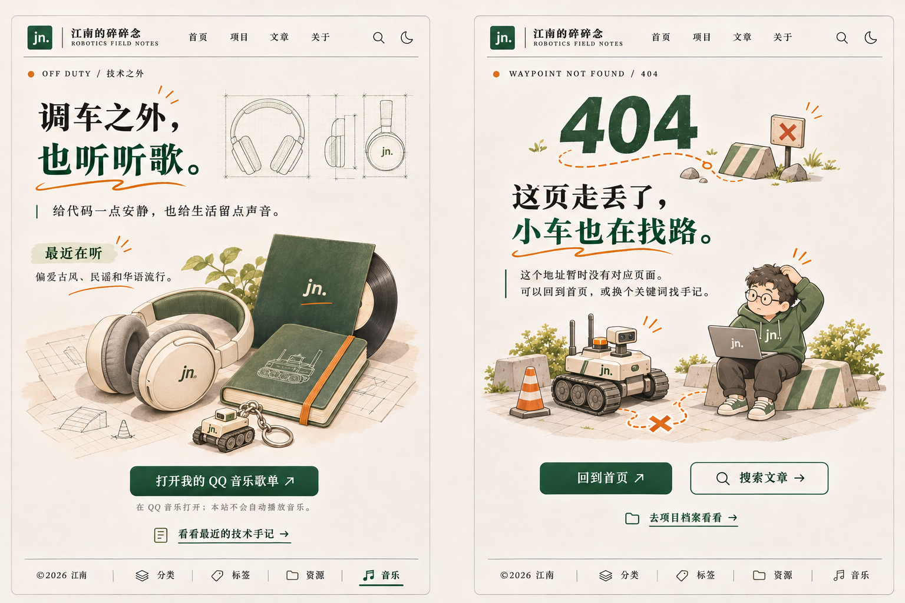
音乐只保留现有 QQ 音乐歌单外链；404 不自动跳转。
mobile-main
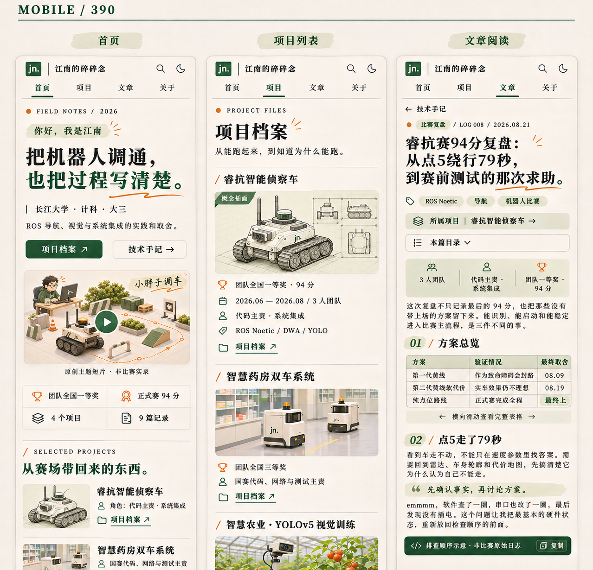
390 CSS px 是设计目标，不代表实机测试通过。
mobile-content
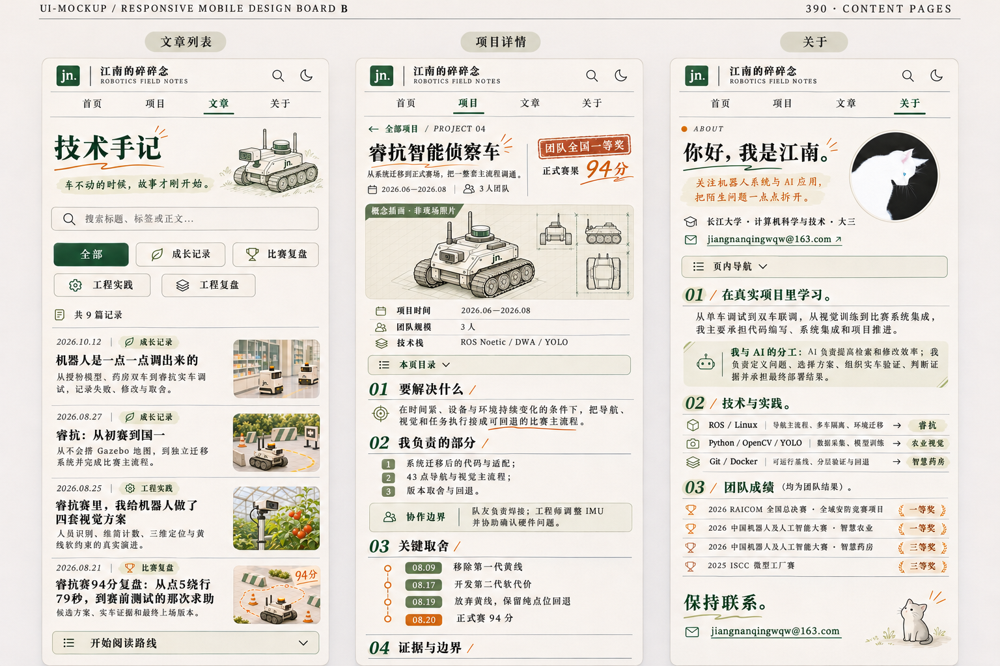
目录折叠、长标题完整换行、详情时间线纵排。
dark
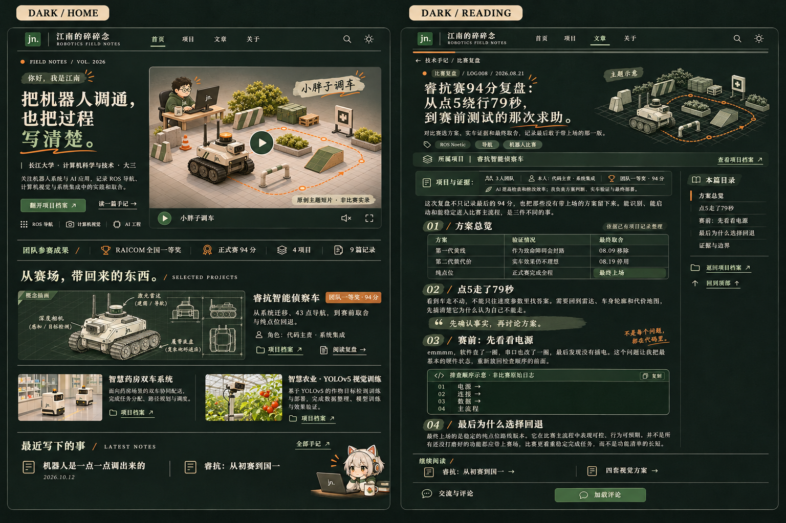
是主题方向稿；没有测过实现后的对比度，不可当作 WCAG 验证。
mobile-utilities
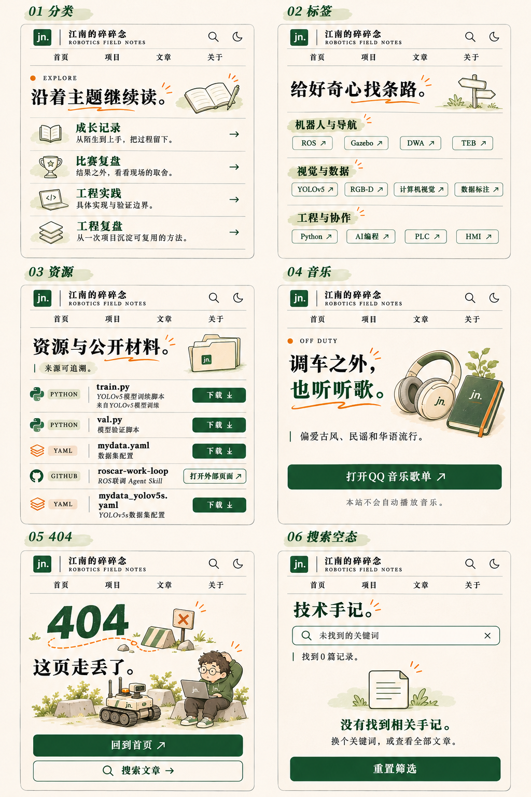
分类、标签、资源、音乐、404、搜索空态六个界面。